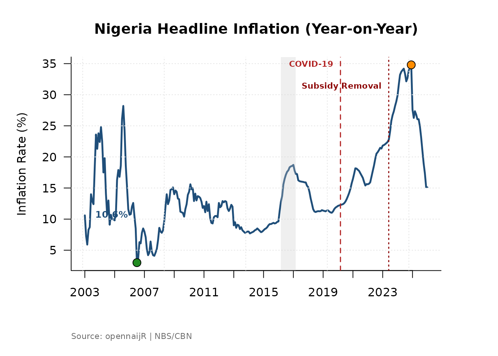
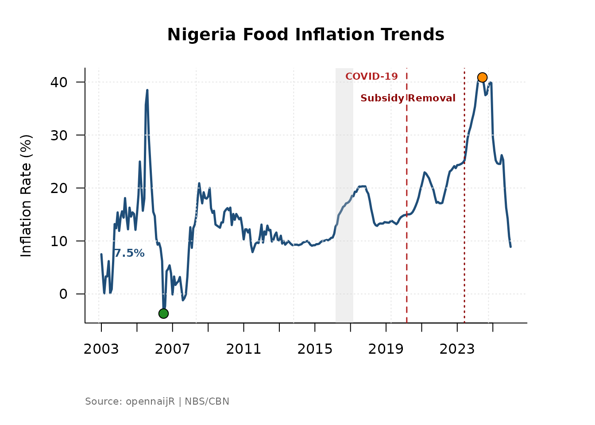
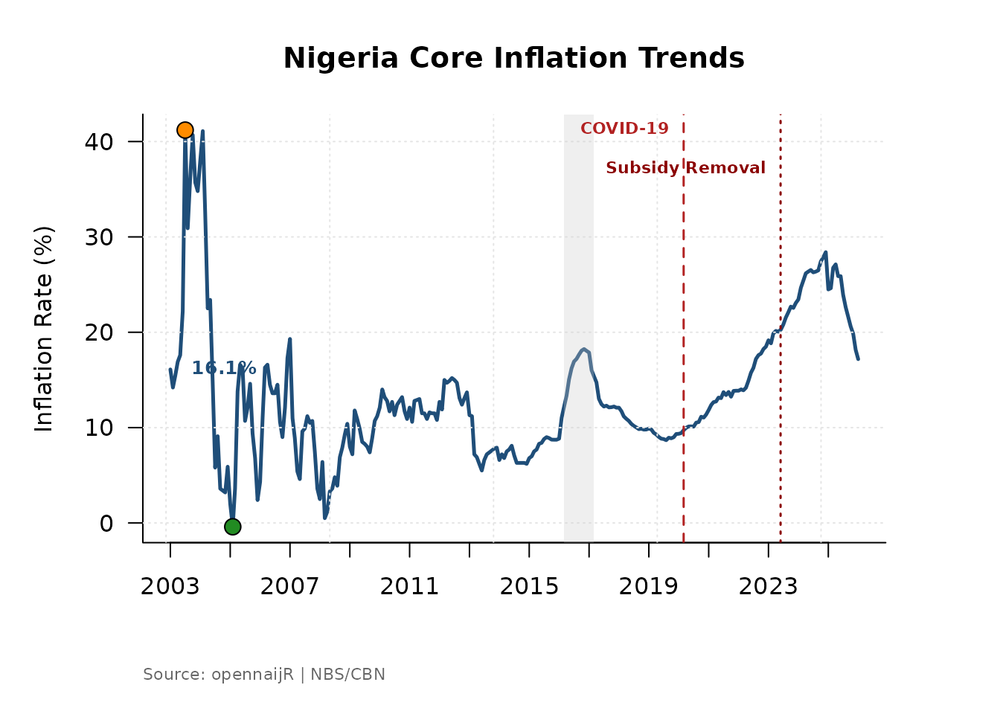
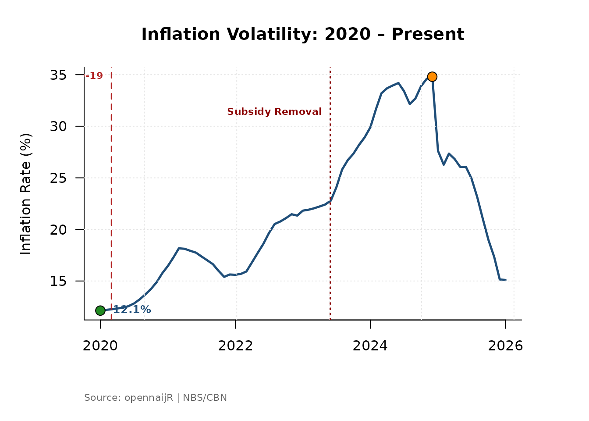
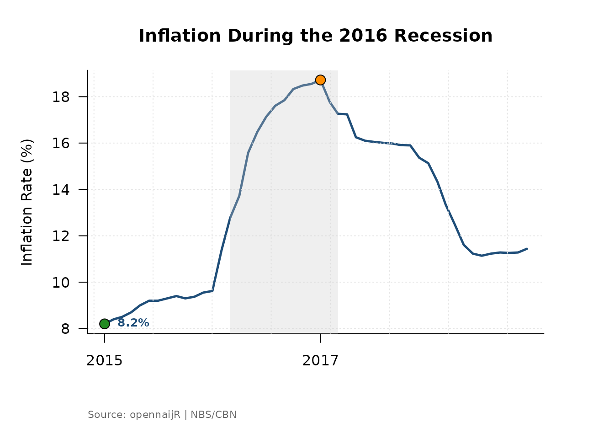
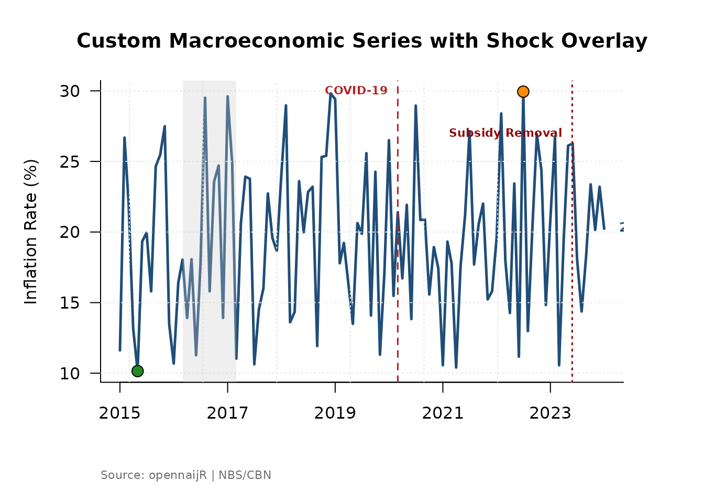
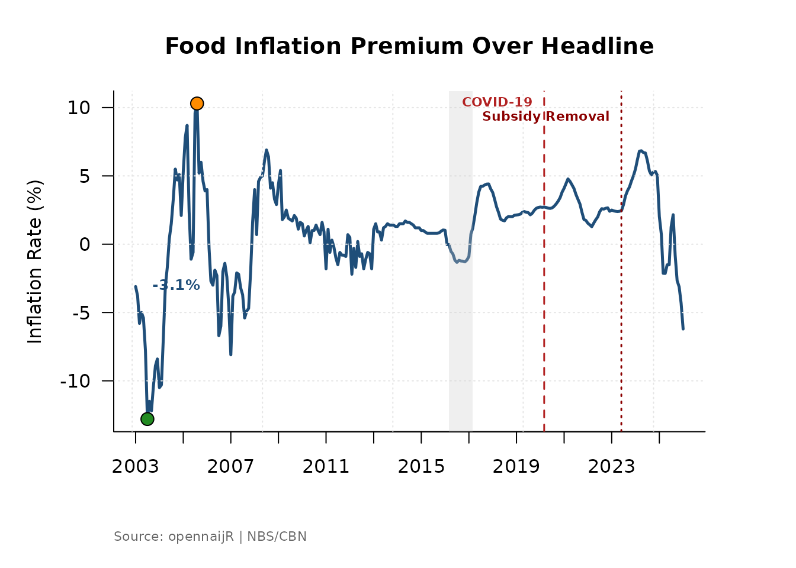
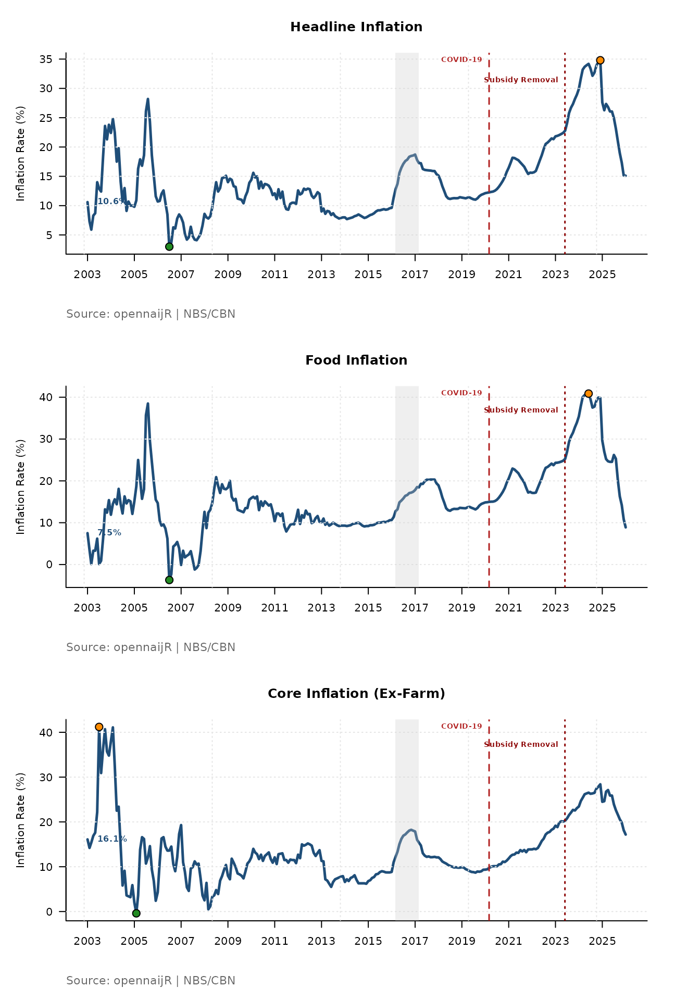

Visualising Inflation with plot_inflation_shocks()
Source:vignettes/plot_inflation_shock.Rmd
plot_inflation_shock.RmdWhat is plot_inflation_shocks()?
Inflation numbers in isolation are only half the story. To understand why a rate moved, you need the economic context around it — when did a recession hit? When did fuel subsidies end? When did COVID disrupt supply chains?
plot_inflation_shocks() answers that need. It draws an
inflation time series and automatically overlays vertical markers for
significant Nigerian macroeconomic events, so the relationship between
policy shocks and price movements is immediately visible — no manual
annotation required.
Arguments
| Argument | Type | Default | What it does |
|---|---|---|---|
data |
data.frame |
— | Your dataset. Must contain a date column and a numeric value column |
date_col |
character |
"date" |
Name of the column holding dates |
val_col |
character |
"headline_yoy" |
Name of the column to plot on the y-axis |
title |
character |
"Nigeria Inflation Trends" |
Plot title |
Output: A rendered plot in your active graphics device. The shock markers are drawn automatically — you do not configure them.
Built-in Shock Events
The function ships with markers for the following events. They are drawn as labelled vertical lines so you can immediately see where each shock falls on your series.
| Event | Period |
|---|---|
| 2016 Recession | Q1–Q4 2016 |
| COVID-19 Pandemic | March 2020 – December 2021 |
| 2023 Fuel Subsidy Removal | June 2023 |
These represent structural breaks in the Nigerian economy that consistently appear in macroeconomic research. When your inflation series shows a sharp inflection, the markers tell you whether a known shock coincides with it.
1. Basic Usage
If your dataset comes from cbn("inflation"), the default
column names already match the function’s expectations. One line
produces a publication-quality chart.
library(opennaijR)
infl <- cbn("inflation")
#> Fetching raw data from 'https://www.cbn.gov.ng/api/GetAllInflationRates' ...
#> Applying canonicalization using 'standardize_cbn_inflation'
#> Creating new version '20260308T125742Z-6b8dc'
#> Writing to pin 'cbn__inflation__d305a3e522e5ccc56286e414cfd231cd'
plot_inflation_shocks(infl)
What you will see: Headline year-on-year inflation plotted as a continuous line, with vertical bands or lines marking the three shock events, a labelled y-axis showing percentage points, and a clean title.
2. Switching Inflation Measures
Nigeria’s headline inflation figure is a weighted composite.
Sometimes you need to look beneath it. Use the val_col
argument to plot a different component and update the title to
match.
# Food inflation — typically more volatile than headline
plot_inflation_shocks(
data = infl,
val_col = "food_yoy",
title = "Nigeria Food Inflation Trends"
)
# Core inflation — strips out farm produce and energy
plot_inflation_shocks(
data = infl,
val_col = "core_ex_farm_yoy",
title = "Nigeria Core Inflation Trends"
)
When to use each:
-
headline_yoy— overall price level; use for general briefings and policy summaries. -
food_yoy— most sensitive to supply shocks, weather, and import costs; use when analysing food security or agricultural policy. -
core_ex_farm_yoy— strips out food and energy to reveal underlying demand pressures; preferred in monetary policy analysis.
Comparing all three against the same shock markers reveals whether a price spike was broad-based or driven by a single component.
3. Focusing on a Specific Period
The full inflation series stretches back many years. For a presentation or report focused on recent volatility, filter your data frame before passing it to the function. The shock markers will automatically adjust to whichever events fall inside the filtered window.
# Zoom in on the post-COVID and subsidy-removal period
recent <- infl[infl$date >= as.Date("2020-01-01"), ]
plot_inflation_shocks(
data = recent,
title = "Inflation Volatility: 2020 – Present"
)
# Isolate the 2016 recession era
recession_era <- infl[
infl$date >= as.Date("2015-01-01") &
infl$date <= as.Date("2018-12-01"),
]
plot_inflation_shocks(
data = recession_era,
title = "Inflation During the 2016 Recession"
)
Why filter rather than zoom the axis? Filtering restricts the data that enters the function, which keeps the y-axis scale honest for the period of interest. Axis zooming can visually exaggerate variation by compressing a small range.
4. Working with External or Custom Data
plot_inflation_shocks() is not limited to CBN data. Any
data frame with a date column and a numeric column works — as long as
you tell the function which column is which via date_col
and val_col.
# A data frame with non-standard column names
external_df <- data.frame(
period = seq(as.Date("2015-01-01"), as.Date("2024-01-01"), by = "month"),
rate = runif(109, 10, 30)
)
plot_inflation_shocks(
data = external_df,
date_col = "period",
val_col = "rate",
title = "Custom Macroeconomic Series with Shock Overlay"
)
This makes the function reusable for NBS data, World Bank series, or any other monthly indicator you want to plot in the Nigerian macroeconomic context.
5. Deriving a Measure First, then Plotting
plot_inflation_shocks() integrates naturally with
derive_measure(). Engineer a feature and plot it
immediately — the result is a new column in the same data frame, so no
extra steps are needed.
# Derive the food-headline gap, then visualise it
infl_gap <- derive_measure(
infl,
food_gap = food_yoy - headline_yoy,
reason = "Food premium over headline inflation"
)
plot_inflation_shocks(
data = infl_gap,
val_col = "food_gap",
title = "Food Inflation Premium Over Headline"
)
A positive food_gap means food prices are rising faster
than the overall basket — a signal of food-specific supply pressure
rather than broad demand inflation.
6. Batch Comparison: Multiple Metrics in One View
par(mfrow) stacks multiple plots in a single graphics
window. This is the fastest way to compare how different inflation
components responded to the same shock.
metrics <- c(
"headline_yoy",
"food_yoy",
"core_ex_farm_yoy"
)
labels <- c(
"Headline Inflation",
"Food Inflation",
"Core Inflation (Ex-Farm)"
)
par(mfrow = c(3, 1), mar = c(4, 4, 3, 1))
for (i in seq_along(metrics)) {
plot_inflation_shocks(
data = infl,
val_col = metrics[i],
title = labels[i]
)
}
Reading the stacked output: Look at how the shock markers align — or misalign — across the three panels. If food inflation spikes sharply at the 2023 subsidy removal but core inflation barely moves, it tells you the shock was a supply-side, cost-push event rather than a demand-driven one. That is a meaningful policy finding.
7. Saving Plots for Reports
To export a chart for a policy brief or journal submission, wrap the
function in png() or pdf():
png(
filename = "nigeria_headline_inflation.png",
width = 2400,
height = 1500,
res = 300
)
plot_inflation_shocks(
data = infl,
title = "Nigeria Headline Inflation with Macroeconomic Shocks"
)
dev.off()For PDF output, replace png() with
pdf(file = "...", width = 8, height = 5). PDF is preferred
for academic submissions because it is vector-based and scales without
loss of quality.
Workflow Position
plot_inflation_shocks() sits at the end of the
opennaijR pipeline, after your data is clean and your features are
derived:
cbn() → apply_projection() → derive_measure() → plot_inflation_shocks()It is a communication tool — it turns an analysis-ready dataset into something a policymaker, student, or journalist can read at a glance.